Opening projects the normal way in VS Code can get repetitive. You open folders, reconnect to remote machines, navigate back to where you were, and do the same steps again later.
Project Manager solves this by letting you save your workspaces and jump back into them directly. Once saved, you can reopen anything in seconds.
Install Project Manager
Go to the Extensions tab on the left side of VS Code and search for Project Manager. Install the one by Alessandro Fragnani.
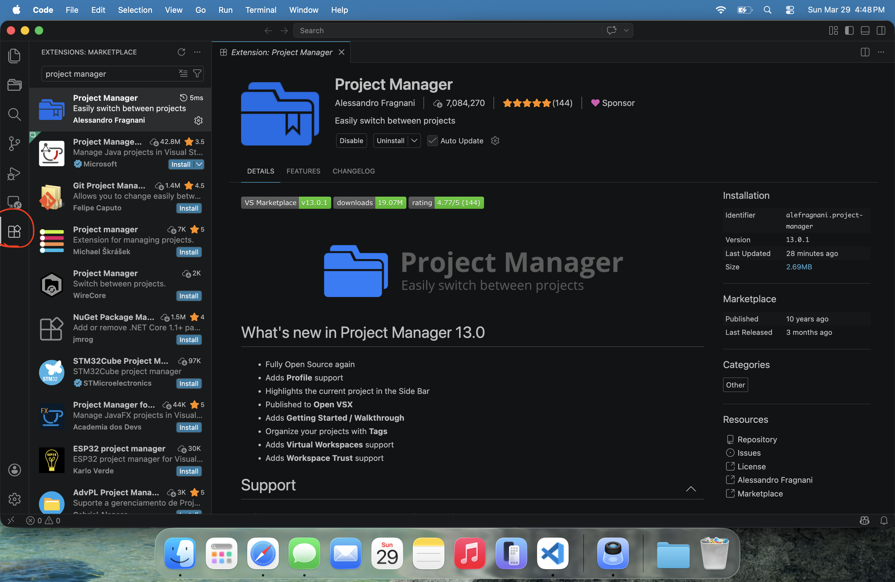
Open Project Manager
After installing, a new folder icon will appear on the left sidebar. Click it.
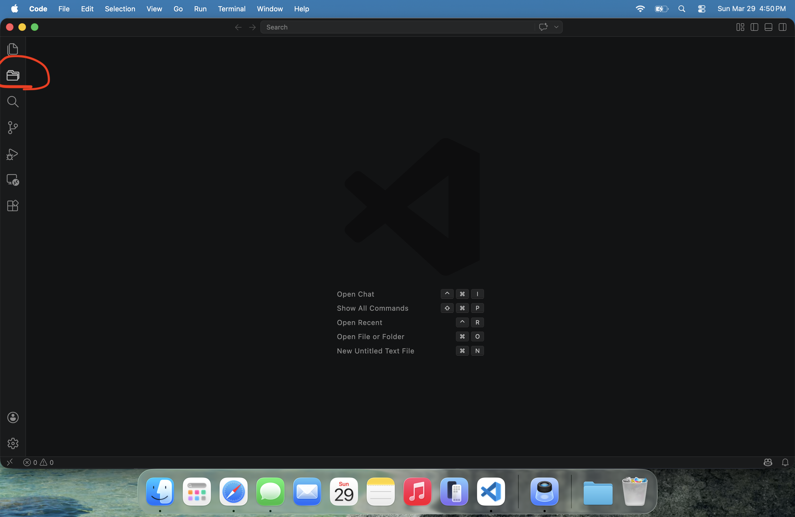
You will see that nothing is saved yet.
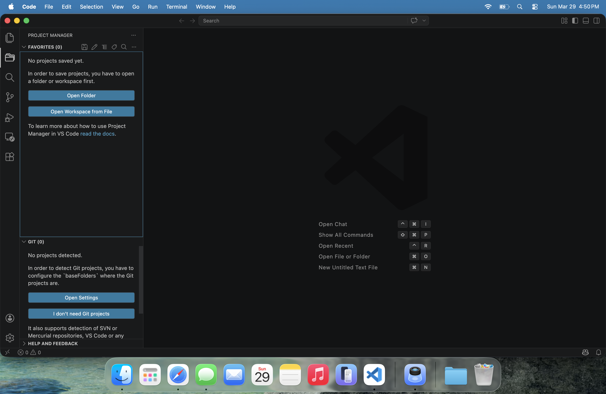
Open a project
Now you need to open something you actually want to work on.
This can be:
- A local folder on your computer
- A remote folder, like Moria or ICER
For this example, we are connected to a remote machine, but the process is identical for local work.
Open your working directory.
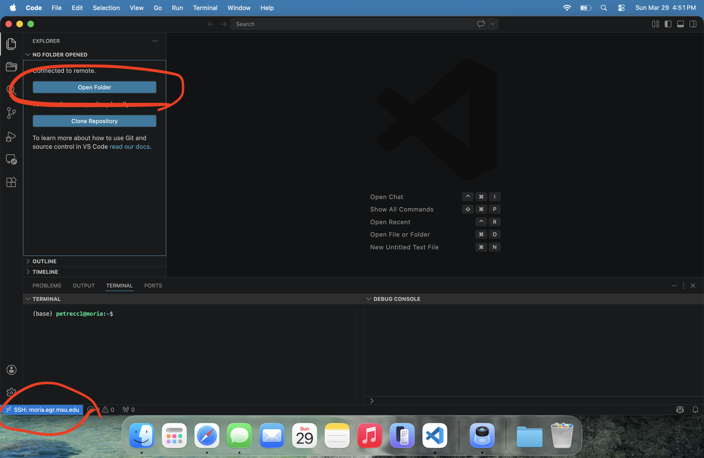
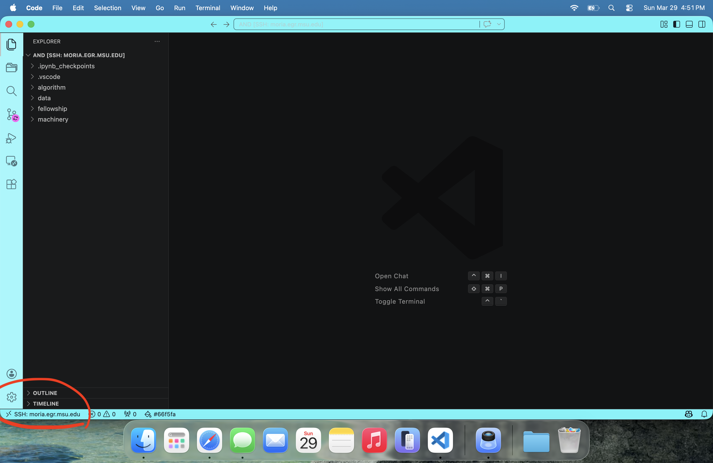
Save the project
Now go back to the Project Manager panel and click the save icon.
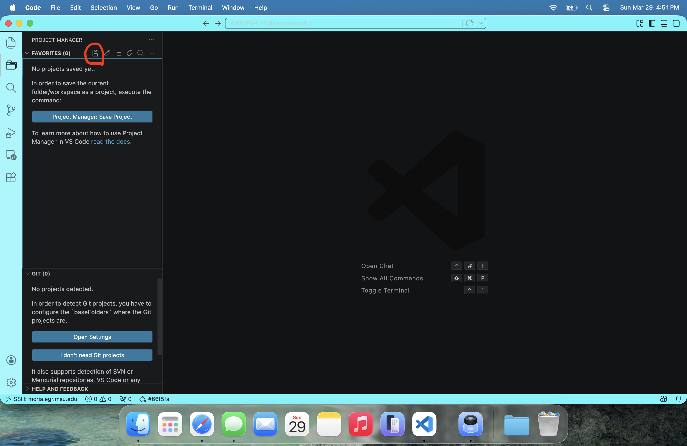
Type a name for your project.
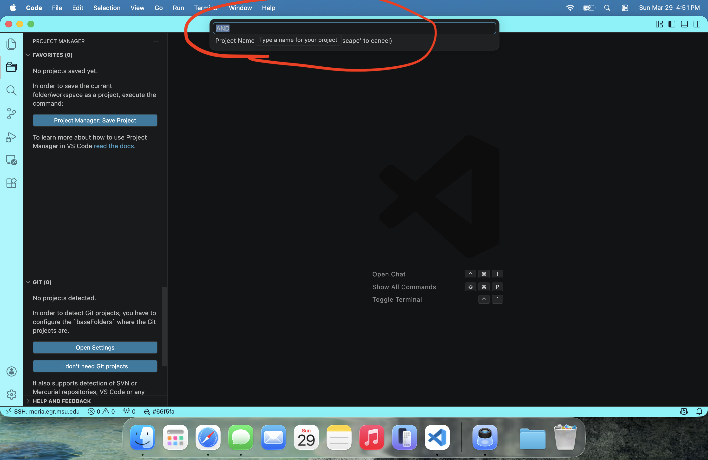
Hit enter.
You should see it appear in your list and a confirmation message.
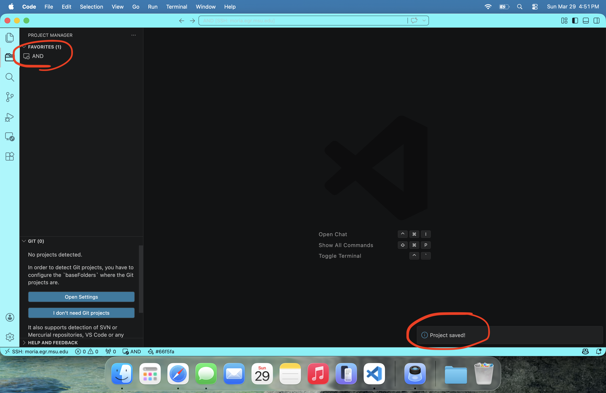
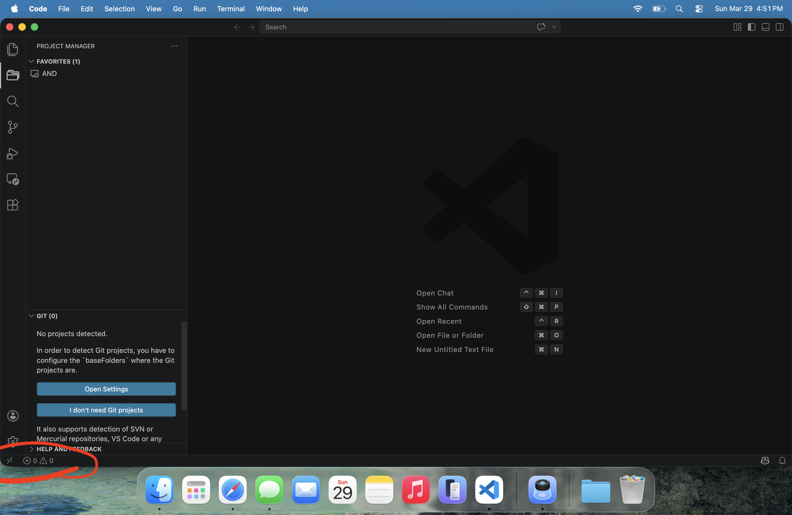
Using it: the payoff
Now for the important part.
Close VS Code and reopen it normally.
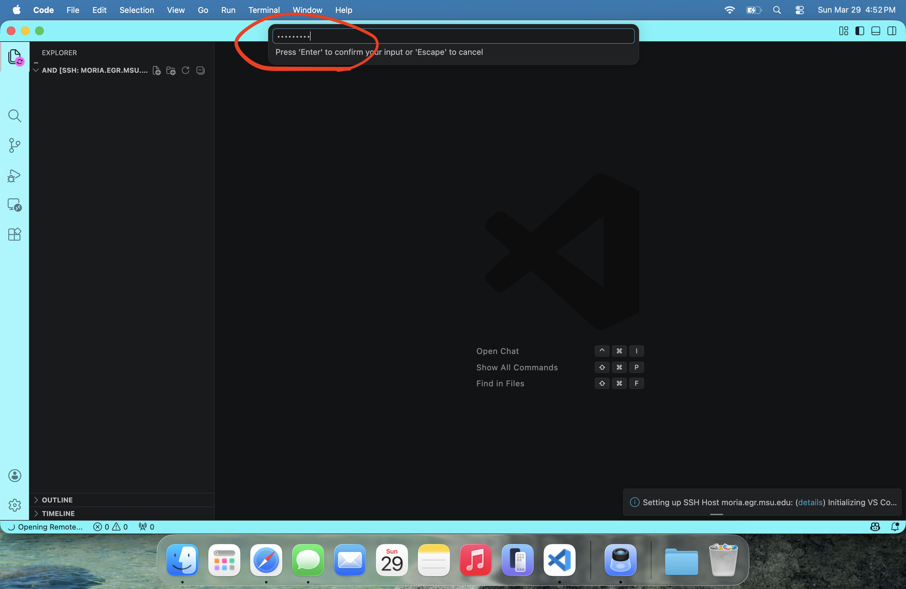
Open Project Manager and click your saved project.
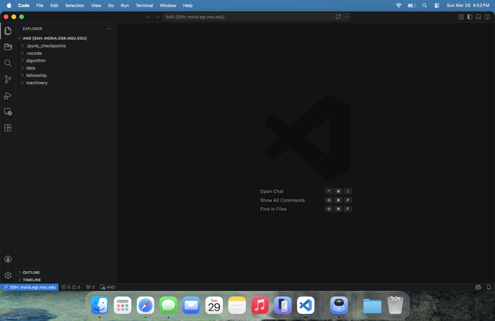
If needed, enter your password.
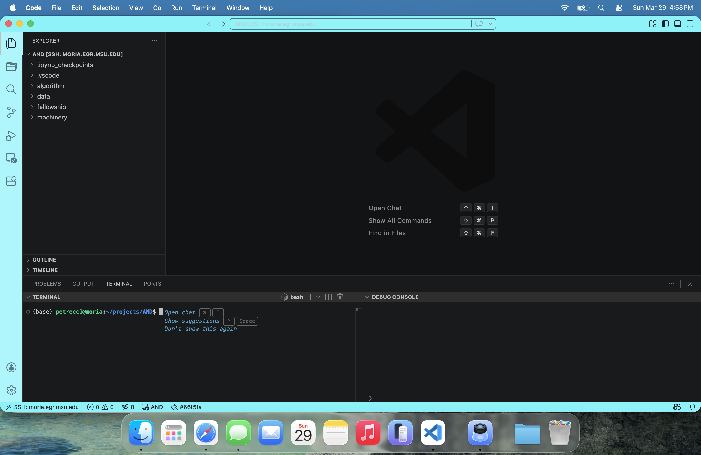
You are now back in your project exactly where you left off.
What this gives you
Instead of repeatedly:
- Opening folders
- Navigating directories
- Reconnecting to systems
You now:
Choose the saved workspace you want from Project Manager.
Jump back into local projects, remote projects, class work, or research.